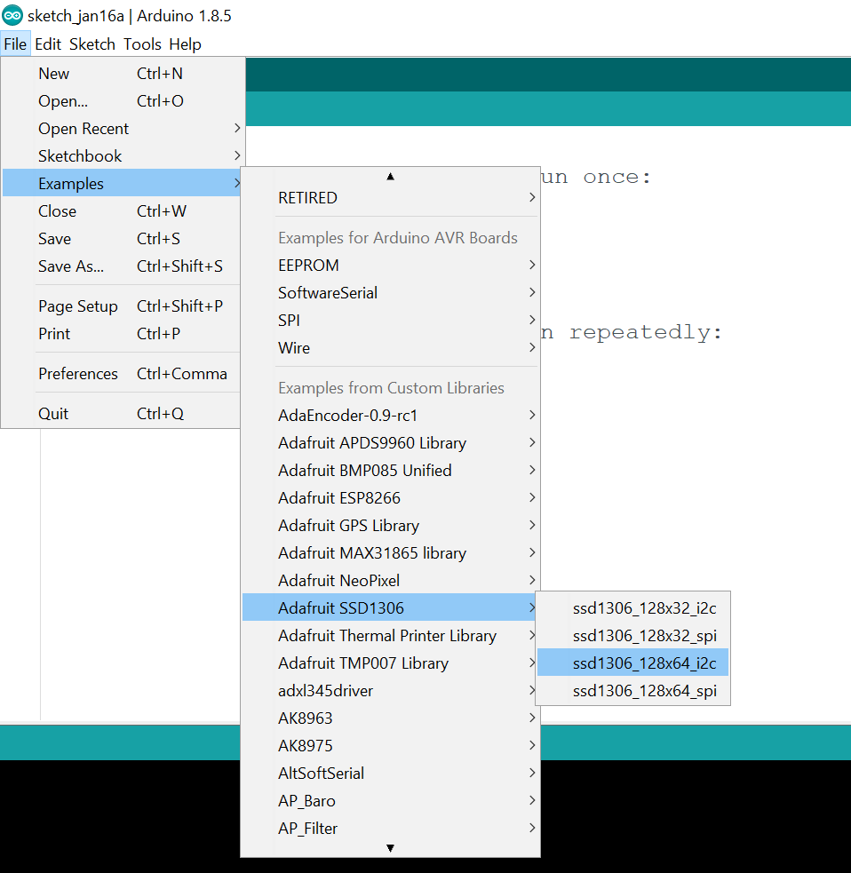
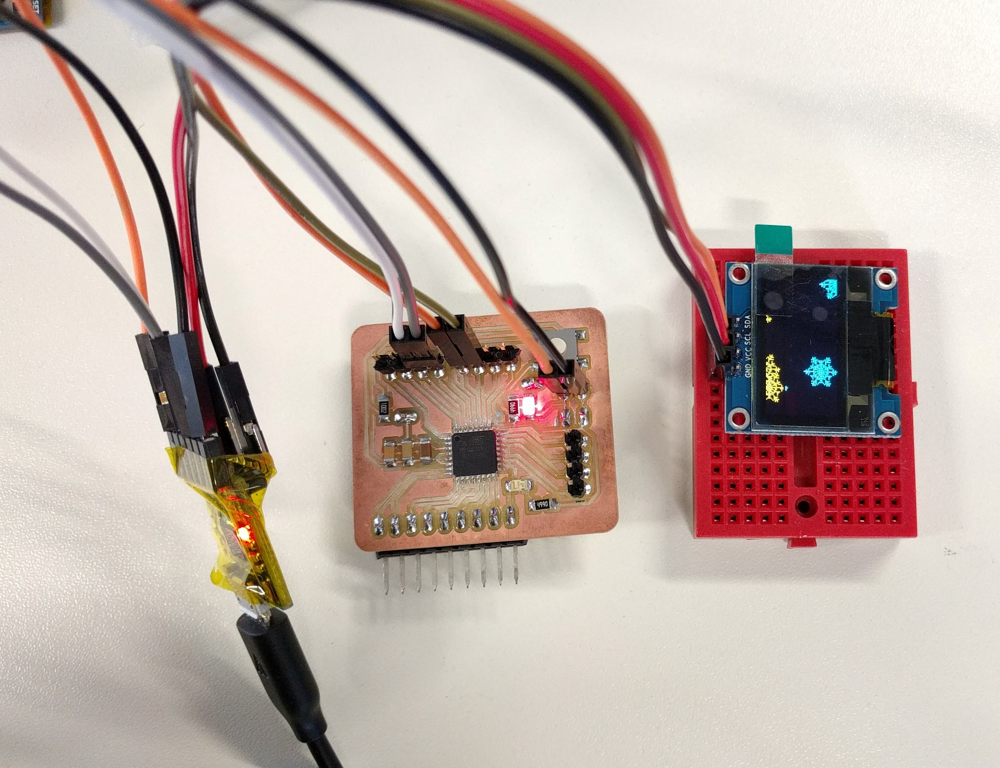
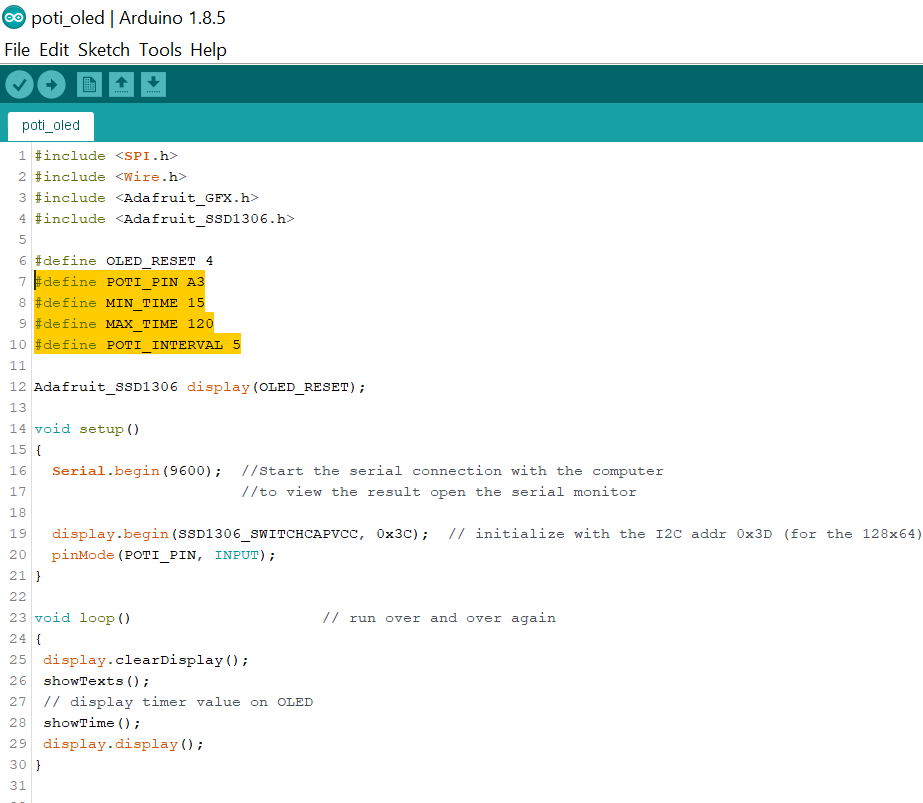
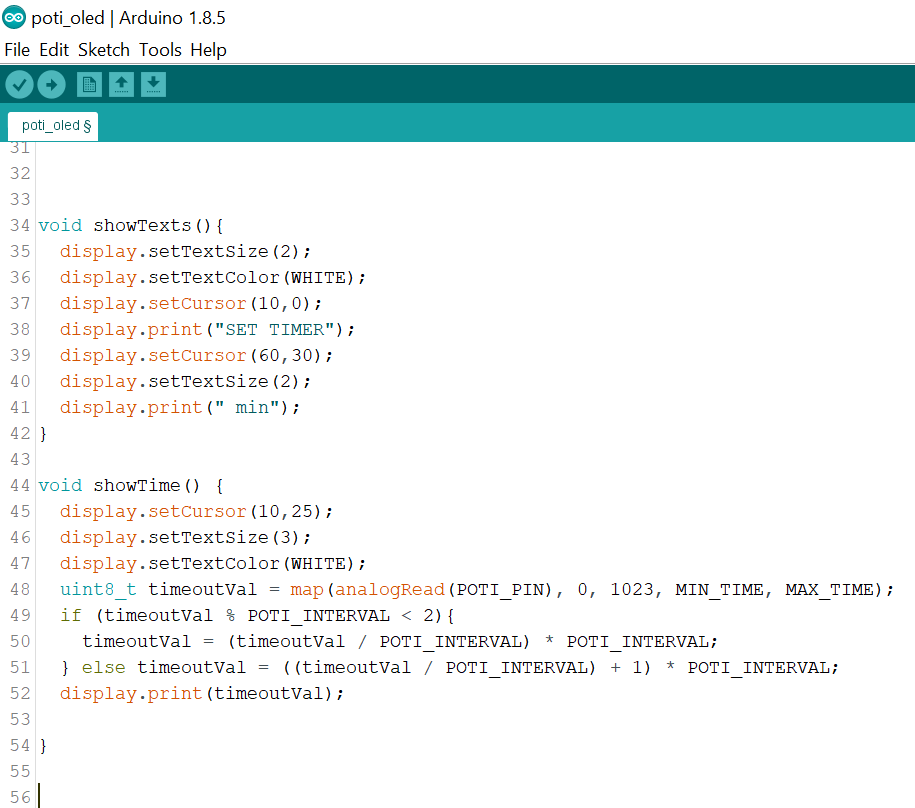
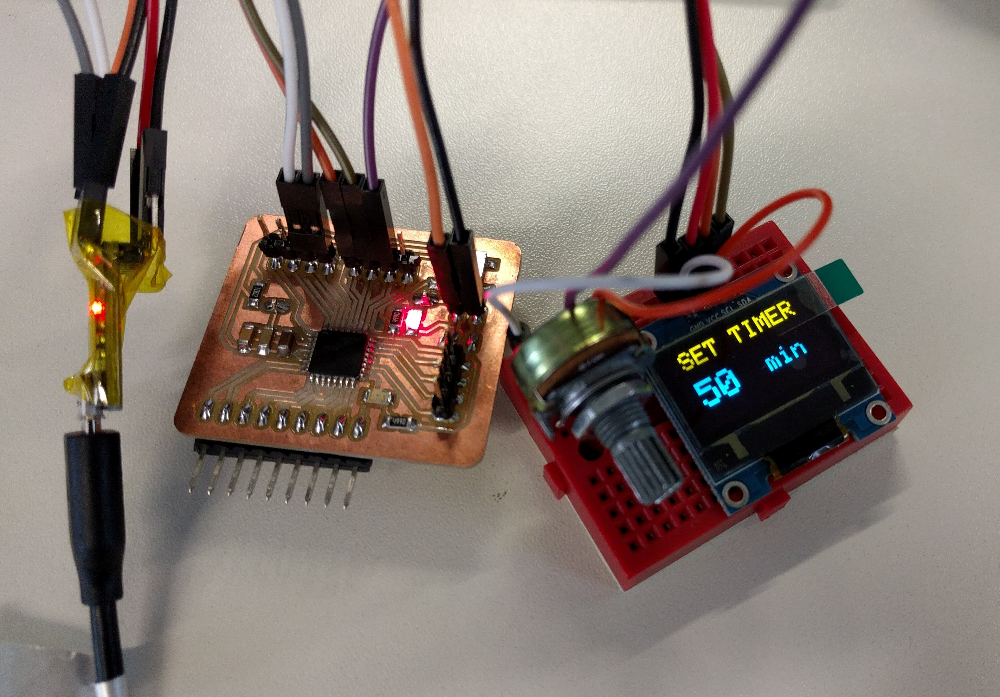
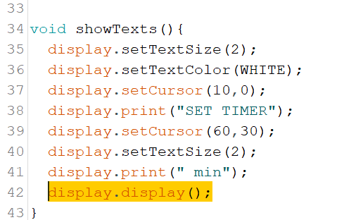
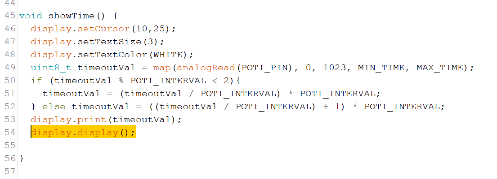

The assignment for this week is to use one or some of the communication protocols taught in the lecture (Serial SPI, I2C, WiFi, Bluetooth) to communicate between one of the FabLab-made boards with other boards or devices. I myself experimented with the I2C protocol between my FabLab-made board from Week 9 and an OLED screen because this is what I need to use later for my final project.
First I downloaded the Adafruit SSD1306 OLED Driver Library and copied the unipped folder to my Arduino Libraries folder. Then I opened one of the example sketches included in the library. Since my OLED display has the resolution of 128 pixels x 64 pixels and I want to use the I2C protocol, I have to choose the ssd1306_128x64_i2c example sketch:
Then I wired the OLED to my FabLab-made board as followed:
ATMEGA328 Board's pin ----- OLED's pin
VCC -------------- VCC
GND ----------------------- GND
SCL -------------- A5/SCL
SDA ----------------------- A4/SDA
As the I2C name suggested, we only need 2 wires (SCL & SDA lines) to connect the device to the board, besides the power lines. Before uploading the sketch I have to put in the correct I2C address of the OLED device (which can be found at the back of the display) in the code. For example, mine is 0x3C instead of the default 0x3D given in the library:

Then I connect my board to the TTL-Serial converter in order to upload the example sketch to the board. And it works:
Now I would like to create my own sketch in order to use it for my final project. For that, I need to use a potentiometer as the input and the display as the output. When the user turns the potentiometer, the display will show the corresponding value in minutes with a minimum of 15 and a maximum of 120 (can be redefined in the sketch). Thus, I wired a 10K-ohm potentiometer to my board as followed:
ATMEGA328 Board's pin ----- Potentiometer's pin
VCC -------------- RIGHT pin (0 ohm)
GND ----------------------- LEFT pin (10K ohm)
ADC3 -------------- MIDDLE pin
The middle pin of potentiometer always has be connected to an Analog input pin of the board. For the other 2 pins, connecting the LEFT one (the 0 ohm end) to GND and the RIGHT one (the 10K ohm end) will cause the value to increase when we turn it in clockwise direction, and vice versa, connecting LEFT pin to VCC and RIGHT pin to GND will cause the value to decrease when we turn it clockwise.
Then I wrote a sketch to map the analog input values (0 to 1023 with interval of 1 unit) to minutes from 15 to 120 with an interval of 5 units in between these limits. The limits and interval can be changed in the defined MACROS at the top of the sketch.
 Besides the setup() and loop() functions the sketch also has 2 more functions: showTexts() which simply displays a fixed line of text, for example "SET TIMER" on top of the screen and showTime() which calculates the value of minutes based on the potentiometer's input and dynamically display it on the screen below the text.
This is how it looks like when I first uploaded the sketch to my board:
And when I turn the potentiometer, the value on the screen changes accordingly:

With the OLED screen, in the beginning I made some mistake in the code thus the screen was flickering a lot, as can be seen here:
After some trials I figured out that because in the code I repeated the display.display() functions twice in the loop by calling the 2 functions showTexts() and showTime() which both have its own display.display() function which updates the screen, causing the flickering because of the continuous updates:
 Thus in the end I removed these 2 lines from the 2 functions and replace them with only 1 line in the loop() instead, and it solved the problem.
The sketch for the Potentiometer and the OLED can be downloaded here.